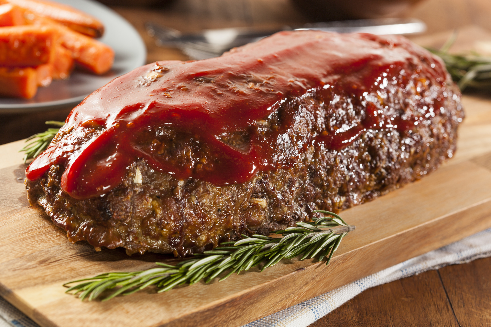

Meatloaf is a dish of a ground meat that has been combined with other ingredients and formed into a shape of a loaf, then baked or smoked. The final shape is either hand-formed on a baking tray, or pan-formed by cooking it in a loaf pan. It is usually made with ground beef, although ground lamb, pork veal, venision, poultry and seafood are also used, sometimes in combination. Vegetarian adaptations of meatloaf may use imitation meat or pulses.
The cooked meatloaf can be sliced a loaf of bread to make individual portions. It can easily become dry; therefore, various techniques exist to keep the dish moist, like mixing in bread crumbs and egg, covering it with sauce, wrapping it, or using moisture-enhancing ingredients in the mixture, such as filling it with fatty meats, rich cheeses, or vegetables.